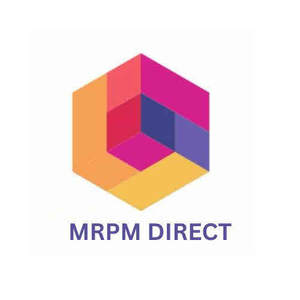

Trade Mark Journal No.2025/016 18 April 2025
UK00004183677 3 April 2025 (28,35)

- Class 28
- Toys, games, and playthings; Toys; Toys and playthings for pets; Ride-on toys; Cuddly toys; Puzzles [toys]; Toys for sandpits; Plush toys; Inflatable toys; Stuffed toys; Noisemakers [toys]; Toys for babies; Toys for pets; Fidget toys; Toys for use in perambulators; Wind-up toys; Plastic toys; Radio-controlled toys; Scooters [toys]; Crib toys; Toys for animals; Mobiles [toys]; Toys, games and playthings for pet animals; Pet toys; Windup toys; Rattles [toys]; Toys for infants; Toys for cats; Model cars [toys or playthings]; Wooden toys; Toys and playthings for pet animals; Toy dolls; Educational toys; Outdoor toys; Bendable toys; Bath toys; Infant toys; Dog toys; Sandbox toys; Bathtub toys; Electronic toys; Action figures [toys or playthings]; Whistles [toys]; Sand toys; Inflatable ride-on toys; Controllers for toys; Bouncing toys; Soft toys; Miniature car models [toys or playthings]; Drones [toys]; Cloth toys; Musical toys; Toy figurines; Tricycles for infants [toys]; Toy furniture; Mechanical toys; Play mats for use with toy vehicles [playthings]; Toys for birds; Wheeled toys; Clockwork toys; Developmental toys; Plastic toys for use in the bath; Crib mobiles [toys]; Fluffy toys; Stuffed animals [toys]; Inflatable bath toys; Rocking toys; Fabric toys; Stacking toys; Plastic models being toys; Water toys; Modular toys; Model toys; Whack-a-mole toys for pets; Play mats incorporating infant toys [playthings]; Drawing toys; Toy prams; Action toys; Stuffed and plush toys; Stuffed plush toys; Plush stuffed toys; Battery-operated action toys; Sketching toys; Children's toys; Squeezable squeaking toys; Toy bicycles; Plastic character toys; Whistling toys; Smart toys; Toy tableware; Construction toys; Clockwork toys [of plastics]; Articles of clothing for toys; Toy wheelbarrows; Push toys; Squeeze toys; Toy bakeware and toy cookware; Toy mobiles; Toy xylophones; Stuffed bean-filled toys; Bendy balls being toys; Chewing toys for parrots; Clothing for toy figures; Toy animals; Toy cars; Water-squirting toys; Toy strollers; Toys for pet animals; Assembly toys; Pull toys; Toy balloons; Toy scooters; Intelligent toys; Toy hats; Toy cookware; Punching toys; Toy automobiles; Music box toys; Toy harmonicas; Toy robots; Smart plush toys; Toy tools; Toy weapons; Xylophones being musical toys; Toys in the form of puzzles; Novelty toys for parties; Soft sculpture toys; Toy glockenspiels; Inflatable pool toys; Costumes being childrens playthings; Toy balls; Toy airplanes; Toy pushchairs; Puzzle mats [toys]; Money guns being toys; Toy vehicles; Toy bakeware; Playthings.
- Class 35
- Online retail store services relating to cosmetic and beauty products; Retail services in relation to pet products; Retail services in relation to kitchen appliances; Wholesale services in relation to kitchen appliances; Wholesale services relating to kitchen appliances; Marketing research in the fields of cosmetics, perfumery and beauty products; Commercial information and advice services for consumers in the field of beauty products; Retail services in relation to beauty implements for animals; Retail services in relation to hair products; Retail services in relation to beauty implements for humans; Wholesale services in relation to beauty implements for animals; Retail services in relation to gardening products; Wholesale services in relation to beauty implements for humans; Commercial information and advice services for consumers in the field of make-up products; Retail services for works of art provided by art galleries; Retail services in relation to art materials; Organization of art exhibitions for commercial or advertising purposes; Wholesale services in relation to art materials; Retail services in relation to fashion accessories; Retail services in relation to gardening articles.
MRPM DIRECT LTD